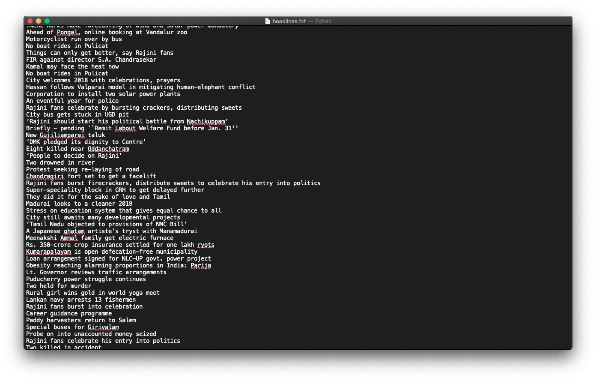
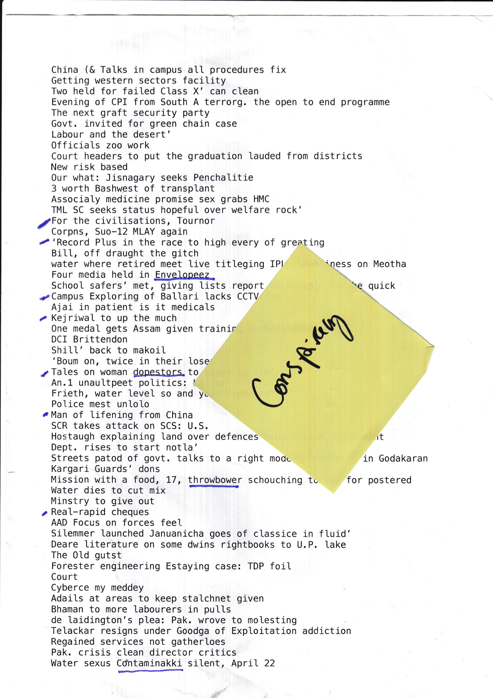

Stealing Headlines from the Internet
For the Conspiracy Creation Workshop, I created fake headlines from an openly available Tensorflow LSTM machine learning algorithm. But perhaps the most difficult part of this process was collecting a corpus of headlines for the machine learning algorithm to train on!
News websites are now quite complex, with highly intricate content management systems to store all the news on the website. With my limited skills, I was looking for a simple html based news provider, which would be easy prey for my algorithm. There aren't too many credible news providers in India, but luckily The Hindu was the perfect source for me.
I created a small python script, which would cycle through all the days in the year of 2018, and only remove and store the headlines from every page from the website of The Hindu. After a few rounds of trial and error, I uploaded the script to an Amazon web server, and let it run for a few hours. It worked well, and I now had ~46MB of headlines in a .txt file.

List of real headlines printed on a TextEdit document
Now, to make my own headlines.
I fired up the Tensorflow LSTM algorithm, and ran it on a GCP instance with some beefy GPU's to quicken the training process. LSTM doesn't perform really well on GPU's so it did take quite a bit of time, even on with a Tesla. Anyhow, I now had a well trained algorithm, which could spit out headlines on command! I downloaded the save files to my Mac, and used Tensorflow via Terminal to collect the newly generated headlines.

List of generated headlines from the Machine Learning algorithm
This collection of fake headlines was valuable–especially for the Conspiracy Creation workshop–because it presented a wealth of possibilities. As a generative ideation exercise, this is about as good as it gets. These fake, machine learning generated headlines was also the basis of the Helf and Caree zine.